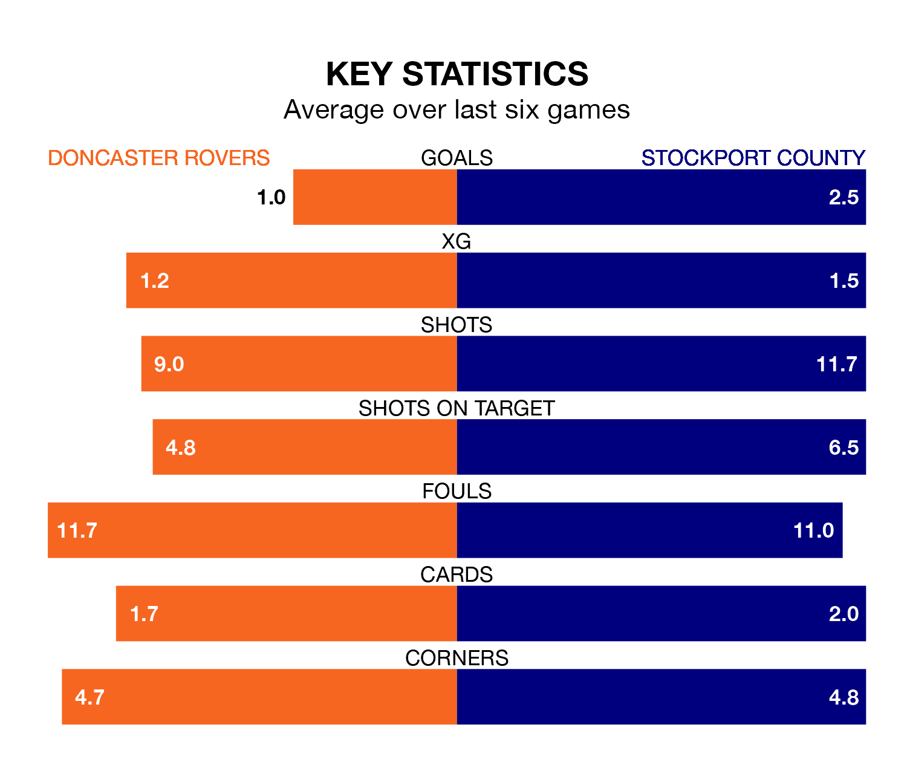

Mid-season relegation candidates Doncaster Rovers face a challenge against high-flying Stockport County at the Eco-Power Stadium on Saturday.
Doncaster Rovers are 21st in the EFL League Two table, and have picked up eight wins and four draws in their 27 games to date.
The Hatters, meanwhile, are top of the standings with 54 points, having won 16 and drawn six.
With 56 goals in 27 games so far this season, Stockport are the league's second-highest scorers with 2.1 goals per game. And they are conceding fewer than average, letting in 27 goals at a rate of 1.0 per game.
Doncaster, meanwhile, are below average scorers, with 1.1 goals per game, compared to a league average of 1.5. They have conceded 1.7 goals per game.
In Ben Hinchiffe, County can rely on one of the league's safest pair of hands. He has kept 10 clean sheets in his 27 appearances this season, and no 'keeper has prevented the opposition scoring more often in EFL League Two.
In Rovers' net, Louis Jones has four clean sheets in 18 games. He has conceded a goal every 71 minutes, 40% more often than the 97 minutes between goals for Hinchiffe.
The Rovers are in bad form in EFL League Two, with one win and a draw from their last six games.
With three wins and two draws over that period, the Hatters' form is much better – they have taken 11 points from 18, compared to the home team's four.
In the last three years, Doncaster and Stockport have played each other on three occasions. They won one each, and they drew once.
Their last meeting was on October 7, when Stockport won 1-0 at home.
Doncaster's last match was on January 13, a 1-0 loss against Newport County.
Stockport beat Walsall 3-1 last time out, also on January 13, with Akil Wright, Isaac Olaofe and Paddy Madden on the scoresheet.
Saturday's match will be refereed by David Rock, who has taken charge of eight EFL League Two games so far this season, issuing three red cards and booking 32 players. He has awarded one penalty.
He is yet to oversee a match featuring either Doncaster or Stockport this season.
Updated: 09:07 (UTC), 24/01/24